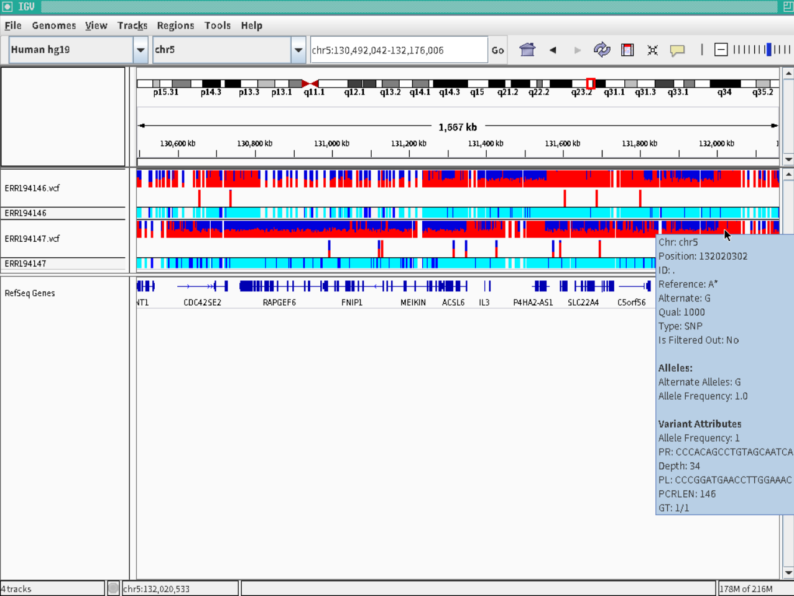

|  |
|
$ sudo apt-get update $ sudo apt install curl $ sudo apt install git $ sudo apt install sra-toolkit $ git clone https://github.com/akiomiyao/ped.git
$ cd ped $ git pull $ perl download.pl accession=ERR194146 $ perl download.pl accession=ERR194147git pullで最新のスクリプトに更新されます。
$ perl ped.pl target=ERR194146,ref=hg19 $ perl ped.pl target=ERR194147,ref=hg19ヒトの参照配列は設定済みなので自動的にダウンロードして解析用データを作成して一連の作業が自動的に進みます。